Cuidda conecta familias con personal de salud verificado a domicilio en Trujillo, Perú. Este panel muestra, en vivo, qué está haciendo el sistema de automatización que procesa las solicitudes de cuidado: dónde está cada una, cuáles esperan una decisión humana y qué se rompió.
Cada indicador se lee directamente de las vistas embebidas más abajo. No hay copias ni cachés: lo que se ve acá es la misma fila que el flujo acaba de escribir en Airtable.
Solicitudes: muere en la ruta A y solo deja rastro en
Log de errores. Si se dividiera por las solicitudes creadas, esos casos
desaparecerían del denominador y la tasa de error quedaría artificialmente baja. Sumarlos
es lo que hace que el número signifique «de cada 100 correos que entraron, cuántos
terminaron mal».
Todas las solicitudes agrupadas por estado, con el distrito, el turno, la prioridad que asignó la IA, el monto estimado y qué modelo la procesó. Sin un solo dato personal: nombre, correo, teléfono, mensaje original y propuesta están ocultos en esta vista.
El punto de validación humana del ecosistema. Todo lo que está en esta lista tiene una
propuesta escrita por la IA y está esperando que una persona marque
Aprobado por Humano y ponga el estado en Aprobado. Recién ahí
el Escenario 2 envía el correo a la familia.
Todo lo que se rompió, agrupado por categoría y con el nodo exacto que falló. El campo
Detalle está oculto a propósito: puede contener el correo del remitente y
este panel es público.
| Tipo de error | Qué lo produce | Directiva |
|---|---|---|
| Fallo de API de IA | El clasificador [8] o el redactor [17] no respondieron |
Break con 3 reintentos en [8], Resume en [17] |
| Dato faltante | El correo no traía distrito, turno o correo de contacto | Sin reintento: se registra y se avisa por Slack |
| Fallo de API de Gmail | El envío de la propuesta aprobada falló | Break con reintento · el estado queda en «Aprobado» y vuelve a entrar |
| Propuesta vacía | Alguien aprobó una solicitud sin propuesta escrita | Check de seguridad: no se envía nada y se avisa en el hilo de Slack |